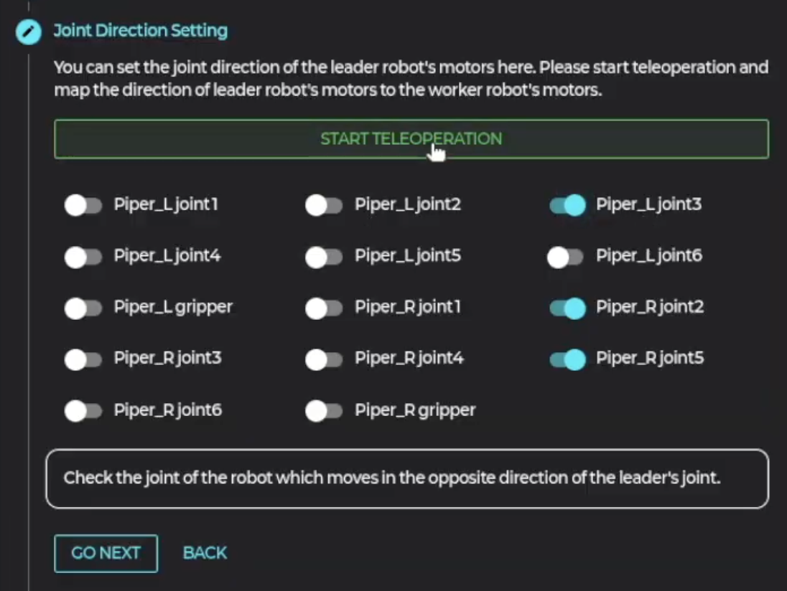
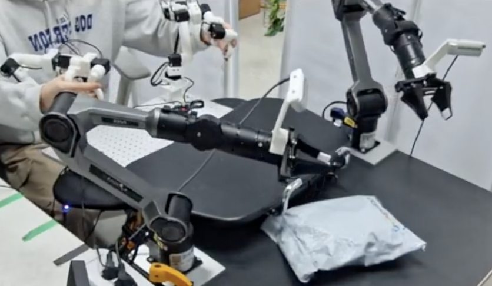
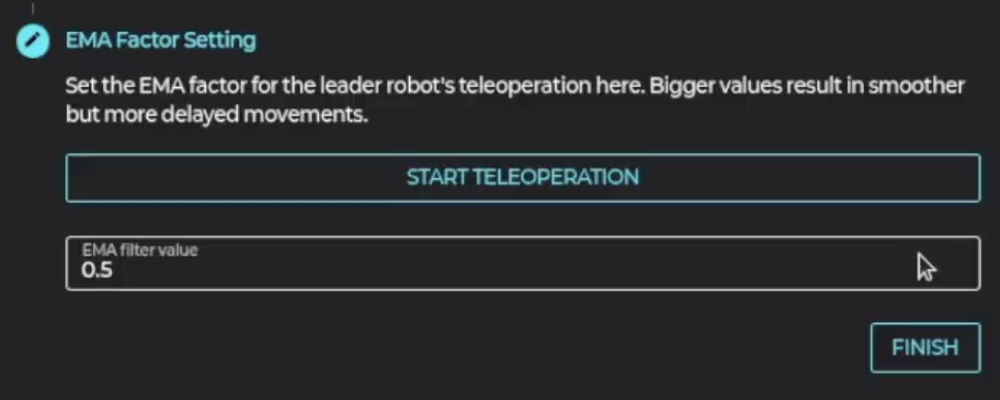
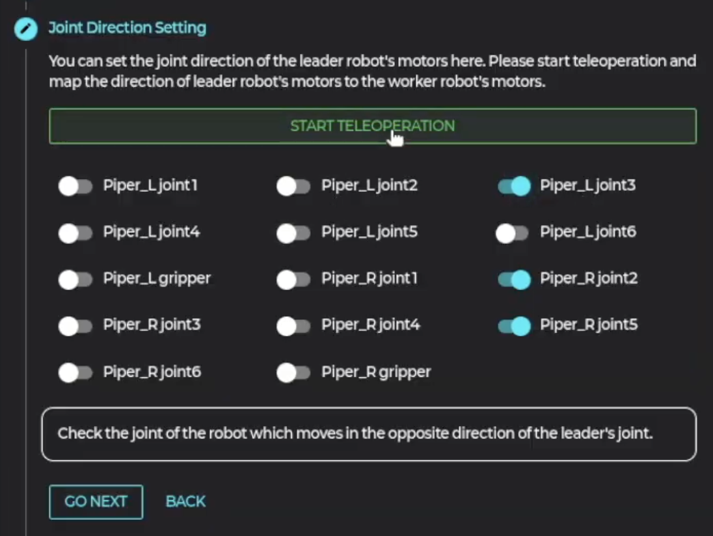
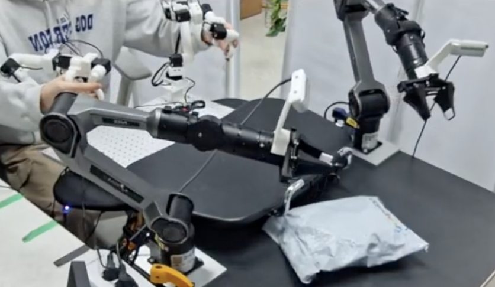
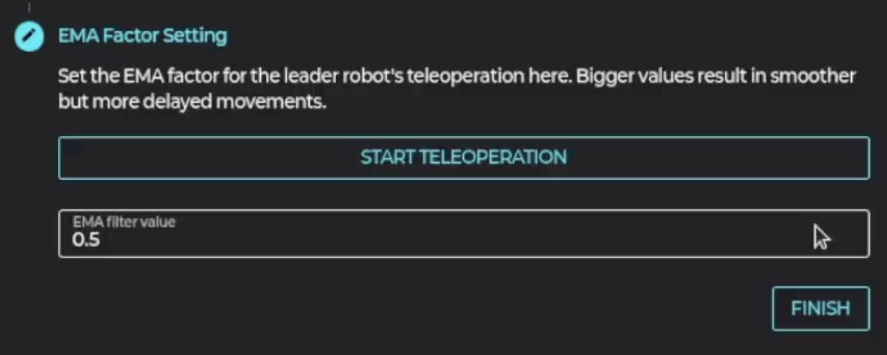

7. Teleoperation


 





4. 리더 로봇을 작업 로봇의 원점과 동일하게 배치 후 “Save & Go Next” 버튼 클릭
5. 리더 로봇 그리퍼를 다음과 같이 벌린 상태에서 첫번째 값 저장
Step 2. 그리퍼 캘리브레이션
6. 리더 로봇 그리퍼를 다음과 같이 닫은 상태에서 두번째 값 저장
7. 텔레오퍼레이션을 직접 해보면서 반대로 움직이는 조인트 번호를 체크
Step 3. 조인트 방향 설정
8, EMA 계수 설정을 통해 로봇이 리더 로봇을 따라 보다 부드럽게 움직이도록 설정
Step 4. 부드러움 설정